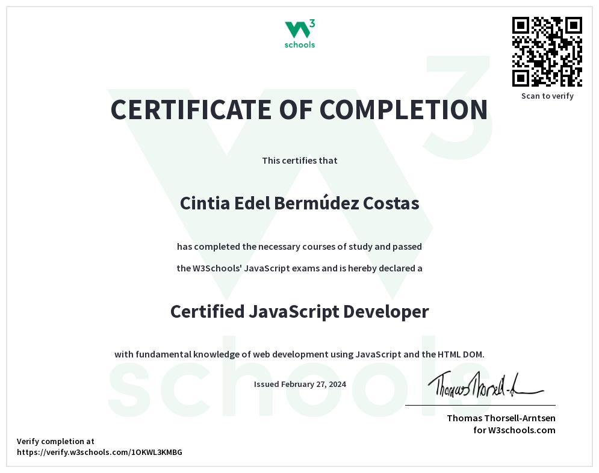
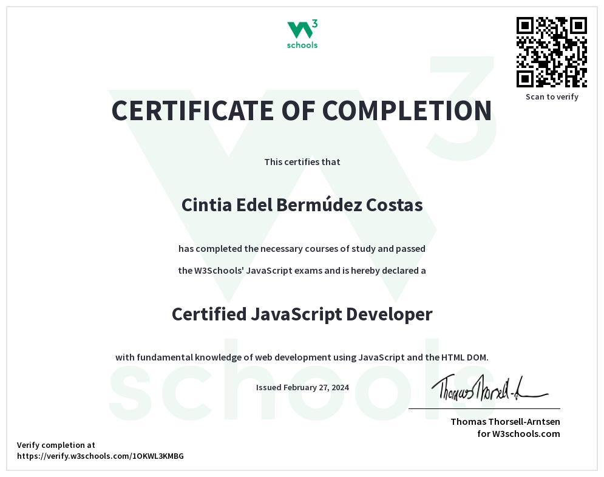

Quién soy y mis habilidades
Soy Cintia Edel Bermúdez Costas, certificada en programación web Front-End por W3Schools. Si necesitas contratar a alguien para que diseñe y aplique el aspecto y la funcionalidad básica de tu página web, además de programar su funcionamiento, soy la persona adecuada.
¿Qué es Front-End?
Como he explicado en el párrafo anterior, soy una desarrolladora Front-End. Si buscas a alguien para que programe tu página, es posible que no tengas claro qué buscas concretamente ni qué significa esto.
En programación web, hay dos tipos de programación. Front-End y Back-End. Podría entender esto como que la programación Front-End es la que se encarga de la cara visible de tu página web, es decir: cómo se ve la página; mientras que el Back-End se encarga de lo que ocurre entre bastidores, es decir, cómo funciona.
Mi trabajo y responsabilidad principal como desarrolladora Front-End es crear una interfaz de usuario buena, que se ajuste a la visión del cliente y que sea accesible para aquellos que vayan a visitar la página web. Yo haré que cuando se pulse un botón, la página cambie de modo oscuro a modo claro, el texto cambie de tamaño, fuente o color, que al pasar el ratón por encima de una imagen aparezca una descripción de esta al lado, etcétera.
Proyectos de ejemplo
Los siguientes proyectos son ejemplos de mi trabajo y lo que potencialmente podría hacer si me contratas para programar tu página web. Esta sección se irá ampliando según complete más proyectos.
Mis estudios
Como podrás ver aquí abajo, estos son mis certificados como programadora Front-End en W3Schools, junto a los 3 lenguajes de programación que uso para esa especialidad: HTML5, CSS y JavaScript. Aunque lo normal es que los programadores estén especializados en un área en concreto, planeo seguir estudiando para expandir mis habilidades, con el objetivo de poder dedicarme también al Back-End e incluso en algún futuro aprender programación de aplicaciones y no solo web.
 

Contacto
Si quieres contratar mis servicios, puedes ponerte en contacto conmigo a través de mi correo electrónico: cintiescrituras@gmail.com. Mis horarios de atención regular al correo electrónico son entre 12:00 a 22:00 de Lunes a Viernes.
Precios
Si me quieres contratar como freelance independiente, mis precios son 10€ por hora trabajada. Al momento del encargo del proyecto podré aportar un aproximado sobre el precio total que podría costar, pero siempre es posible que haya complicaciones que lleven a que el proyecto me requiera trabajar más horas de las esperadas. Se ha de esperar que esas horas extra, como es obvio, estén incluidas en el precio final.